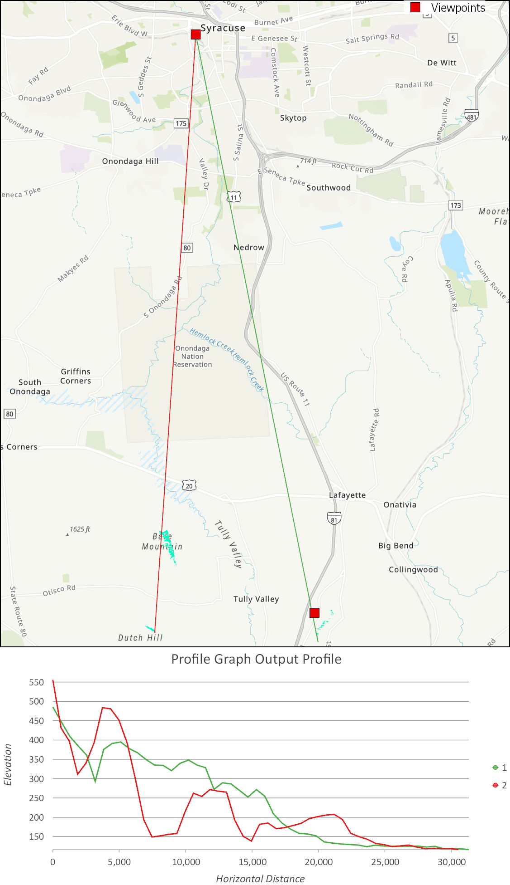
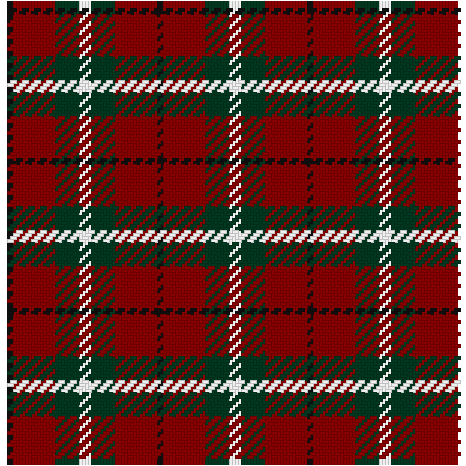
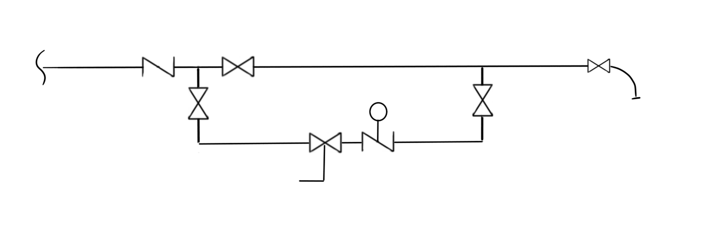

Robotics Club Setup
Home Internet Gateway
Arduino Wind Instrument
Motocomms
Track GDD
Tartan designer
Somerlot Shooting Support System (S4)
Retail support tools
Scheduler
Rewards Program Calculator
Homemade Variable Frequency Drive
Common Mobile Compute Platform
Domotics
Automotive Media System
GPS Chartplotter
Common Sensor and Datalogger Platform
Micro Hydroponics
Technology as Art
Wood Burning Plotter
Lightning Catcher
Irrigation Remote
The Best Damn Radio System
Fixed Wing UAV
Submersible / Surface ROV
Pool Octobot
Scarecrow Targeting System
Invasive Species Patroller
Signal-Tracking Antenna Mount
User Story: I just want the internet to work. I also want to protect my family and house, integrate with Domotics and IoT, and give the internet company their crap hardware back. Maybe I can even eventually dump the internet company completely for community-based wifi or a free-space optical link.
Feature Set:
Figure 1: Line of sight between office and home.

CODE:
### This script updates Route53 AWS Cloud service with the DNS record for the public IP
import boto3
import socket
import netifaces
public_ip = ni.ifaddresses('eth0')[AF_INET][0]['addr']
print(public_ip)
#https://github.com/awslabs/route53-dynamic-dns-with-lambda/blob/master/v1/dynamic_dns_lambda.py
client = boto3.client('route53' )
route_53_zone_id = '' # your zone ID here
route_53_record_name = '' # your FQDN here
route_53_record_type = 'A'
route_53_record_ttl = 300
response = client.change_resource_record_sets(
HostedZoneId=route_53_zone_id,
ChangeBatch={
'Changes': [
{
'Action': 'UPSERT',
'ResourceRecordSet': {
'Name': route_53_record_name,
'Type': route_53_record_type,
'TTL': route_53_record_ttl,
'ResourceRecords': [
{
'Value': public_ip
}
]
}
}
]
}
)
print(response)
CODE:
import socket, sys, os, time
import subprocess as sub
def log(message):
print(message)
def csvInit():
with open(__file__.replace(".py", ".csv"), 'w', encoding='utf-8', newline='\n') as csvf:
csvf.write("datetime,path,size\n")
return csvf.name
def csvInsert(fname, data):
with open(fname, 'a', encoding='utf-8', newline='\n') as csvf:
for row in data:
csvf.write("{},{},{}\n".format(time.strftime("%m/%d/%Y %H:%M", time.localtime()), row, data[row]))
def dbInit():
## https://enterprise-docs.anaconda.com/en/latest/data-science-workflows/data/mariadb.html
import mysql.connector as mariadb
import json
## take care to configure security correctly:
#### https://stackoverflow.com/questions/1559955/host-xxx-xx-xxx-xxx-is-not-allowed-to-connect-to-this-mysql-server
#### https://mariadb.com/kb/en/configuring-mariadb-for-remote-client-access/
## Now, read the credentials from secret
credentials = None
with open(__file__.replace(".py", ".jsn")) as f:
credentials = json.load(f)
# Ensure your credentials were setup
if credentials:
# Connect to the DB
connection = mariadb.connect(
user=credentials.get('user'),
password=credentials.get('password'),
database=credentials.get('database'),
host=credentials.get('host')
)
cursor = connection.cursor()
# Execute the query
cursor.execute("CREATE TABLE IF NOT EXISTS activity (\
date DATE, hour TINYINT, minute TINYINT, second TINYINT, \
len INT UNSIGNED NOT NULL, \
fromAddress NVARCHAR(255) NOT NULL, fromPort NVARCHAR (50), fromContext NVARCHAR (50),\
toAddress NVARCHAR(255) NOT NULL, toPort NVARCHAR (50), toContext NVARCHAR (50)\
);")
return connection
def dbInsert(dbconn, data):
cursor = dbconn.cursor()
insertStr = "INSERT INTO activity VALUES "
now = time.localtime()
for path in data:
insertStr += "('{}',{},{},{},{}".format(time.strftime("%Y-%m-%d", now), now[3], now[4], now[5], data[path])
for pp in parsePath(path):
insertStr += ",'{}'".format(pp)
insertStr += "), "
insertStr = insertStr[:-2] + ';'
cursor.execute(insertStr)
dbconn.commit()
def parsePath(path):
_from, _to = path.strip().split(" > ")
_fromPort = _from.split(".")[-1]
_fromAdd = _from[:-1*(len(_fromPort)+1)]
_fromContext = domainLookup(_fromAdd)
_toPort = _to.split(".")[-1]
_toAdd = _to[:-1*(len(_toPort)+1)]
_toContext = domainLookup(_toAdd)
return _fromAdd, _fromPort, _fromContext, _toAdd, _toPort, _toContext
def domainLookup(address):
if address == 'BCBRWN-PF0QMJMY' or address.replace(".","").isdigit(): context = address
elif address.endswith('1e100.net'): context = "gmail"
elif address.startswith("iRobot"): context = "Roomba"
elif address.startswith("instagram"): context = "instagram"
elif address.endswith(".com") or address.endswith(".net") or address.endswith(".org"):
context = address.split(".")[-2]
else: context = ""
return context
if __name__ == '__main__':
## simplest use is 'nohup python3 watcher.py &', but making it a systemctl service is better: https://www.raspberrypi.org/documentation/linux/usage/systemd.md
# datastore = csvInit()
# saveData = csvInsert
# or
datastore = dbInit()
saveData = dbInsert
timeIndex = 4 ## index of the struct_time; 5 for sum by second, 4 for sum data by minute, 3 for sum by hour
lastmin = time.localtime()[timeIndex]
db = {}
## run tcpdump in buffer mode, link headers only
p = sub.Popen(('sudo', 'tcpdump', '-q', '-i', 'wlan1', '-le', 'greater 55 and tcp'), stdout=sub.PIPE)
for row in iter(p.stdout.readline, b''):
## or use a test file for debugging
# with open('test.log', 'rb') as f: testlog = f.readlines()
# for row in testlog:
try:
mainParts = row.decode('utf-8').strip().split(',')
nextParts = mainParts[2].split(':')
path = nextParts[1]
length = int(nextParts[0][7:])
if path not in db: db[path] = 0
db[path]+= length
if lastmin != time.localtime()[timeIndex]:
saveData(datastore, db)
db = {}
lastmin = time.localtime()[timeIndex]
except ValueError:
log("Bad row: {}".format(row.strip()))
User Story: Real instruments are expensive, and you can only learn to play music...
Feature Set:
User Story: helmet comm units are stupid expensive and sound terrible. And are additive to road noise. And clumsy to control and link. And vendor specific. And another thing to keep charged. And dumb in concept: who's wants a 5 hr running conversation when we just need to communicate when stopped at an intersection about which way to turn? I want a way to use my noise-reducing earbuds with an off the shelf radio through my phone so that I can also hear music or GPS. Also, I like to keep my phone in my jacket pocket so there are no dangling wires. But I don't want to have to look at the radio to use it or worry about charging it before riding.
Feature Set:
Figure 2: Sample output.

import os
from turtle import *
from PIL import Image
DEBUG = False
w = 4
c1 = [(15,15,15)]*2 ## colors are given by (R,G,B) value * number of threads
c2 = [(136,0,0)]*14
c3 = [(0,56,32)]*8
c4 = [(240,240,240)]*4
sett = tuple(c1 + c2 + c3 + c4 + c3 + c2)*3
maxDim = len(sett)*w
if DEBUG: print (len(sett), maxDim)
buffer = 20
setup(width=maxDim+buffer, height=maxDim+buffer,startx=200,starty=20)
screensize(maxDim, maxDim)
setworldcoordinates(0,maxDim,maxDim,0)
if DEBUG:
print(screensize())
if screensize()[0] != maxDim or screensize()[1] != maxDim:
print ("WARNING: Screensize is not set to the maxDim ({}), you likely have aspect warping. Try changing the buffer variable.".format(maxDim))
width(w)
speed(10)
tracer(2)
colormode(255)
register_shape("bar",( (w/2,0),(-(w/2),0),(-(w/2),2*w),(w/2,2*w) ))
shape("bar")
hideturtle()
def tossShuttle():
if heading() == 0.0:
left(90)
forward(w)
left(90)
setx(maxDim)
else:
right(90)
forward(w)
right(90)
setx(0)
#warp
home()
t2 = Turtle()
t2.width(1)
t2.home()
for x, c in enumerate(sett):
penup()
goto([x*w-w/2, -3*w])
pendown()
color(c)
goto([x*w-w/2, maxDim+3*w])
# shade lines
t2.penup()
t2.goto([x*w-w, -3*w])
t2.pendown()
t2.color([int(0.8*x) for x in c])
t2.goto([x*w-w, maxDim+3*w])
penup()
#weft
home()
treadle = 0
for x, c in enumerate(sett):
# color("", c)
color([int(0.8*x) for x in c], c)
forward(treadle*w)
# if DEBUG: print("Heading: {0:5}, Treadle: {2}, Coords: {1}".format(heading(), pos(), treadle))
while 0 <= xcor() < maxDim:
stamp()
forward(4*w)
tossShuttle()
treadle +=1
if treadle > 3: treadle = 0
if not DEBUG:
try:
getcanvas().postscript(file=__file__+".eps", colormode='color')
Image.open(__file__+".eps").save(__file__+".png")
os.startfile(__file__+".png")
except IOError:
print("cannot save image")
exitonclick()
import csv, pprint, random
Population_Size = 5000
Litter_Size = 3
Mutation_Rate = 5
week = ["Sunday", "Monday", "Tuesday", "Wednesday", "Thursday", "Friday", "Saturday"]
shifts = ["Morning", "Afternoon", "Evening"]
def fitness_score(schedule, rules):
score = 0
# Rules by schedule
# check at least 1 person has keys for open and close
# Rules by person
for emp in schedule["ByPerson"]:
# print emp
# check total
if len(schedule["ByPerson"][emp]) > rules[emp]["ShiftsPerWeek"]:
score+= len(schedule["ByPerson"][emp]) - rules[emp]["ShiftsPerWeek"]
# print "\tToo many shifts", score
weekend = 0
morning = 0
afternn = 0
evening = 0
for shift_desc in schedule["ByPerson"][emp]:
if "Saturday" in shift_desc or "Sunday" in shift_desc: weekend+=1
if "Morning" in shift_desc: morning+=1
if "Afternoon" in shift_desc: afternn+=1
if "Evening" in shift_desc: evening+=1
# check works weekends
if not rules[emp]["WorksWeekends"]:
score+=weekend
# print "\tNo weekends", score
# check morning, afternoon, evening shift
if not rules[emp]["WorksMornings"]:
score+=morning
# print "\tMornings bad", score
if not rules[emp]["WorksAfternoons"]:
score +=afternn
# print "\tAfternoons bad", score
if not rules[emp]["WorksEvenings"]:
score +=evening
# print "\tEvenings bad", score
# check only back-to-back double shifts
# print
return score
def getRules(url):
rules = {}
with file(url, 'rb') as csvFile:
data = csv.DictReader(csvFile)
for row in data:
rules[row['Employee']] = {}
for k in row:
val = row[k]
if val == 'TRUE': val = True
if val == 'FALSE': val = False
try:
val = int(val)
except ValueError:
pass
rules[row['Employee']][k] = val
return rules
def mutate(individual):
for gene in individual["gene_dict"]:
if random.randint(0,100) <= Mutation_Rate:
individual["gene_dict"][gene] = random.randint(1,9)
#individual["fitness"] = fitness_score(individual["gene_dict"])
return individual
def mortality(population): #sort individuals (list by fitness score), kill off least fit
sortedPop = sorted(population) #sorted function accepts any iterable, where list.sort does not
return sortedPop[:Population_Size]
def reproduction(population, rules):
nextGen = []
for i in range(len(population)/2):
parent_1 = random.choice(population)
parent_2 = random.choice(population)
## while parent_1 == parent_2:
## parent_2 = random.choice(population)
for offspring in range(Litter_Size):
schedule = {"ByDay":{}, "ByPerson":{}}
for day in week:
schedule["ByDay"][day] = {}
for shift in shifts:
schedule["ByDay"][day][shift] = []
desc = day + " " + shift
for p in range(2):
parent = random.choice(population)
person = random.choice(parent[1]["ByDay"][day][shift])
while person in schedule["ByDay"][day][shift]:
parent = random.choice(population)
person = random.choice(parent[1]["ByDay"][day][shift])
schedule["ByDay"][day][shift].append(person)
if person not in schedule["ByPerson"]:
schedule["ByPerson"][person] = []
schedule["ByPerson"][person].append(desc)
fitness = fitness_score(schedule, rules)
nextGen.append((fitness, schedule))
return nextGen
def makeRandomSchedule(rules):
schedule = {"ByDay":{}, "ByPerson":{}}
employees = rules.keys()
for day in week:
schedule["ByDay"][day] = {}
for shift in shifts:
schedule["ByDay"][day][shift] = []
desc = day + " " + shift
for p in range(2):
person = random.choice(employees)
while person in schedule["ByDay"][day][shift]:
person = random.choice(employees)
schedule["ByDay"][day][shift].append(person)
if person not in schedule["ByPerson"]:
schedule["ByPerson"][person] = []
schedule["ByPerson"][person].append(desc)
fitness = fitness_score(schedule, rules)
return fitness, schedule
def evolve(rules):
# make initial random population
population = []
for i in range(Population_Size+1):
population.append(makeRandomSchedule(rules))
best = sorted(population)[0][0]
# main evolution loop
GenerationCount = 0
while best > 0:
newpop = mortality(population)
population = sorted(newpop + reproduction(newpop, rules))
best = population[0][0]
GenerationCount +=1
print GenerationCount, best
pprint.pprint(population[0][1])
if __name__ == '__main__':
rules = getRules("https://docs.google.com/spreadsheets/d/1IvTSl58Angp1-4FTa40G_7dn3hJZPZtCXY63oiLOJJ8/pub?gid=0&single=true&output=tsv")
evolve(rules)
Description: VFDs really help manage motor performance, and life span. A well pump works much better when on a VFD.
Robotics Club Setup
Home Internet Gateway
Arduino Wind Instrument
Motocomms
Track GDD
Tartan designer
Somerlot Shooting Support System (S4)
Retail support tools
Scheduler
Rewards Program Calculator
Homemade Variable Frequency Drive
Common Mobile Compute Platform
Domotics
Automotive Media System
GPS Chartplotter
Common Sensor and Datalogger Platform
Micro Hydroponics
Technology as Art
Wood Burning Plotter
Lightning Catcher
Irrigation Remote
The Best Damn Radio System
Fixed Wing UAV
Submersible / Surface ROV
Pool Octobot
Scarecrow Targeting System
Invasive Species Patroller
Signal-Tracking Antenna Mount
CircuitPython rules! Arduino drools! Let them eat RaspberryPi!
BOM:
User Story: So many touch-points of our environment involve mechanical systems in our dwellings, it seems both obvious and inevitable to connect these systems to a computing platform to live a less impactful life.
Feature Set:
User Story: Car audio has become increasingly complex when it doesn't need to be. Android Auto can provide a great in-car experience, but all the 3rd-party AA receivers are expensive.
Feature Set:
User Story: A digital map has more to offer than hard-copy, but also, this is just my wheelhouse. BGM seems to have largely captured the marine market, and android auto/apple car play for the automotive market, but these are still proprietary and limited in scope. I want selective sensor integration from a variety of environments and COTS hardware.
Feature Set:
User Story: We want to be able measure a variety of environmental conditions, without hooking up wiring. We can place a sensor indoors or outdoors just for spot checks or leave it for several weeks or add a solar power pack for permanent power. We can hook it up to a dashboard to monitor and provide alarms, or use it in more remote conditions and have it upload once wifi is available, or use a cell modem. Some possible applications include:
User Story: Offices are great places for plants, with ample windows and beneficial effects for workers. But, regular watering can be an issue.
Feature Set:
/***************************************************
Adapted primarily from:
Adafruit ESP8266 onoffbutton Controller Module
Must use ESP8266 Arduino from:
https://github.com/esp8266/Arduino
Works great with Adafruit's Huzzah ESP board:
----> https://www.adafruit.com/product/2471
Adafruit invests time and resources providing this open source code,
please support Adafruit and open-source hardware by purchasing
products from Adafruit!
Written by Tony DiCola for Adafruit Industries.
Adafruit IO example additions by Todd Treece.
MIT license, all text above must be included in any redistribution
****************************************************/
#include <WiFi101.h> // for Feather M0 ATWINC1500
//#include <WiFi.h> // for Feather HUZZAH32 ESP32
//#include <ESP8266WiFi.h>
#include "Adafruit_MQTT.h"
#include "Adafruit_MQTT_Client.h"
#include "keysandstuff.h"
// onoffbutton pin
const int switch_pin = 0;
// Functions
//void MQTT_connect();
WiFiClient client;
// Setup the MQTT client class by passing in the WiFi client and MQTT server and login details.
Adafruit_MQTT_Client mqtt(&client, AIO_SERVER, AIO_SERVERPORT, AIO_USERNAME, AIO_KEY);
/****************************** Feeds ***************************************/
// Setup a feed called 'onoffbutton' for subscribing to changes.
// Notice MQTT paths for AIO follow the form: <username>/feeds/<feedname>
Adafruit_MQTT_Subscribe onoffbutton = Adafruit_MQTT_Subscribe(&mqtt, AIO_USERNAME "/feeds/onoff");
Adafruit_MQTT_Publish onoff_get = Adafruit_MQTT_Publish(&mqtt, AIO_USERNAME "/feeds/onoff/get");
// Setup feeds for sensors
Adafruit_MQTT_Publish level_Pressure = Adafruit_MQTT_Publish(&mqtt, AIO_USERNAME "/feeds/level_pressure");
Adafruit_MQTT_Publish level_Tape = Adafruit_MQTT_Publish(&mqtt, AIO_USERNAME "/feeds/level_tape");
/*************************** Sketch Code ************************************/
void setup() {
//Configure pins for Adafruit ATWINC1500 Feather
WiFi.setPins(8,7,4,2);
pinMode(switch_pin, OUTPUT);
Serial.begin(115200);
while (!Serial) { ; } // wait for serial port to connect. Needed for debugging with serial monitor only
delay(10);
// Connect to WiFi access point.
Serial.println();
Serial.println();
Serial.print("Connecting to ");
Serial.println(WLAN_SSID);
WiFi.begin(WLAN_SSID, WLAN_PASS);
while (WiFi.status() != WL_CONNECTED) {
delay(500);
Serial.print(F("."));
}
Serial.println();
Serial.println(F("WiFi connected"));
Serial.println(F("IP address: "));
Serial.println(WiFi.localIP());
// listen for events on the onoffbutton feed
mqtt.subscribe(&onoffbutton);
// connect to adafruit io
MQTT_connect();
}
void loop() {
int8_t jobDuration;
Adafruit_MQTT_Subscribe *subscription;
// ping adafruit io a few times to make sure we remain connected
if(! mqtt.ping(3)) {
// reconnect to adafruit io
if(! mqtt.connected())
MQTT_connect();
}
//
// this is our 'wait for incoming subscription packets' busy subloop
while (subscription = mqtt.readSubscription(1000)) {
if (subscription == &onoffbutton) {
Serial.print(F("On-Off button: "));
Serial.println((char *)onoffbutton.lastread);
// convert mqtt ascii payload to int
char *value = (char *)onoffbutton.lastread;
Serial.print(F("Received: "));
Serial.println(value);
// Apply message to onoffbutton
String message = String(value);
message.trim();
if (message == "ON") {
jobDuration= Flood();
Serial.println("publishing to /get");
onoff_get.publish((int32_t)jobDuration);
break;
}
}
}
}
// connect to adafruit io via MQTT
void MQTT_connect() {
int8_t ret;
while ((ret = mqtt.connect()) != 0) {
switch (ret) {
case 1: Serial.println(F("Wrong protocol")); break;
case 2: Serial.println(F("ID rejected")); break;
case 3: Serial.println(F("Server unavail")); break;
case 4: Serial.println(F("Bad user/pass")); break;
case 5: Serial.println(F("Not authed")); break;
case 6: Serial.println(F("Failed to subscribe")); break;
default: Serial.println(F("Connection failed")); break;
}
if(ret >= 0)
mqtt.disconnect();
Serial.println(F("Retrying MQTT connection in 5 seconds..."));
delay(5000);
}
Serial.println(F("MQTT Connected to Adafruit IO!"));
/*
Publishing to {username}/feeds/onoff/get will trigger the last
value to be resent. Putting this call inside the MQTT_connect
function means that whenever MQTT reconnects, the latest value
for the feed will be received almost immediately.
*/
Serial.println("publishing to /get");
onoff_get.publish((int32_t)0);
}
int8_t Flood() {
int timer = 0;
// turn on air pump and close ARV
digitalWrite(switch_pin, LOW);
float level_pressure_data;
float level_tape_data;
float last_level_pressure_data = 0;
float last_level_tape_data = 0;
while (true) {
timer += 3;
level_pressure_data = 0;
level_tape_data = 0;
if (! level_Pressure.publish(level_pressure_data))
Serial.println(F("Failed to publish level_pressure"));
else
Serial.println(F("Level_pressure published!"));
if (! level_Tape.publish(level_tape_data))
Serial.println(F("Failed to publish level_tape"));
else
Serial.println(F("Level_tape published!"));
last_level_pressure_data = level_pressure_data;
last_level_tape_data = level_tape_data;
if (abs(level_pressure_data - level_tape_data) > 1) {
//send alert
}
if ((level_pressure_data < 3) || (level_tape_data < 3)){
//send alert
}
if (timer > 20) {
//send alert
digitalWrite(switch_pin, HIGH);
break;
}
delay(3000);
}
return timer;
}
User Story: Plotters are simple output devices, but can require a large amount of track and infrastructure; using 2 motors to control location of marker via line in/out in a polar coordinate fashion will allow the device to scale up to billboard size for a giant art display, say along a major north/south interstate highway. For example.
Feature Set:
BOM:
User Story: Lightning is one of the most powerful forces of nature, and I want to catch it. Plus, it could be a great learning opportunity.
Feature Set:
User Story: We leave the house for extended periods during hot dry weather and know that we won't lose plants. When we harvest, we can turn off drippers by plant. Plumbing and electrical are unobtrusive and dependable. Water is conserved as much as possible. We can use rain water if desired.
Feature Set:
Figure 3: Plumbing Schematic.

Description: Tiny HAM radio that can be used anywhere
User Story: The world is still a big place and to explore certain parts in safety, we need a way to broadcast an emergency. PLBS are really only domestic, not hackable (or even able to replace batteries), and for emergency only. Sat messengers have not-insignificant subscription fees, and varying coverage. HAM remains the most ubiquitous global radio infrastructure, and with help, can be transmitted from any global location, for a variety of needs.
Feature Set:
Robotics Club Setup
Home Internet Gateway
Arduino Wind Instrument
Motocomms
Track GDD
Tartan designer
Somerlot Shooting Support System (S4)
Retail support tools
Scheduler
Rewards Program Calculator
Homemade Variable Frequency Drive
Common Mobile Compute Platform
Domotics
Automotive Media System
GPS Chartplotter
Common Sensor and Datalogger Platform
Micro Hydroponics
Technology as Art
Wood Burning Plotter
Lightning Catcher
Irrigation Remote
The Best Damn Radio System
Fixed Wing UAV
Submersible / Surface ROV
Pool Octobot
Scarecrow Targeting System
Invasive Species Patroller
Signal-Tracking Antenna Mount
Welcoming our new overlords...
User Story: Quadcopter UAVs are great for inspections and tight places, but require many batteries and many flights to capture site imagery used for mapping. They are also expensive and difficult to control. With so many camera and sensor options available off-the-shelf, a fixed-wing platform like the eBee makes a lot of sense for certain types of missions.
Feature Set:
User Story: Many things are down there in the deep, waiting discovery. Metal, habitat, species... many things, in many places, some very remote. I want a platform that can travel the world with any sensor I can dream of, and deliver itself back to me.
Feature Set:
Notes:
User Story: Cleaning pools involves scrubbing algal growth from surfaces, and sucking up debris. What better format of robot to do this but something with 8 arms, a beak mouth, and a bag to hold debris?
Feature Set:
User Story: In the suburban warfare environment, its our ability to grow food versus mother nature's ability to provide - gardens versus wildlife - me versus the creatures - fencing versus projectile-based discouragement. I want to defend my many hours of invested effort from the random and sneaky browsing of deer and dog.
Feature Set:
Description: A mechanism to automate the pointing of recevier/transmitter sensors.
User Story: If my awesome new FOS laser link at remote data IoT device can't communicate, its not nearly as useful.